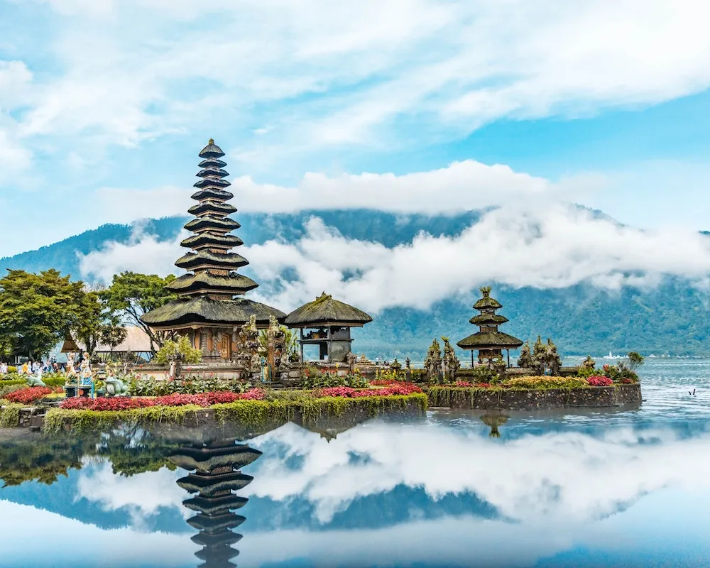
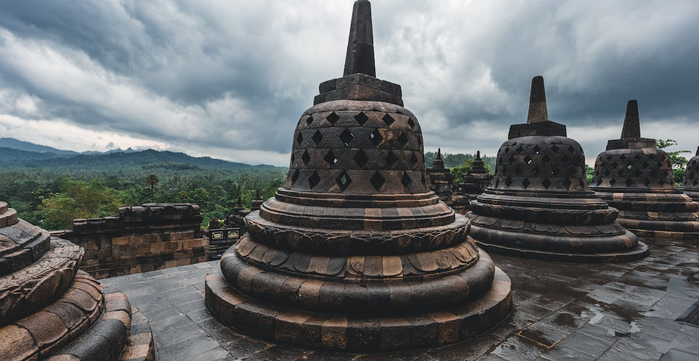

Destinasi Unggulan

Bali
Pulau dewata dengan pantai eksotis dan budaya unik.

Raja Ampat
Surga bawah laut dengan keanekaragaman hayati tertinggi di dunia.

Yogyakarta
Kota budaya dengan warisan sejarah dan kuliner istimewa.

Labuan Bajo
Gerbang menuju Komodo dan keindahan laut Flores.

Danau Toba
Danau vulkanik terbesar di Asia Tenggara dengan budaya Batak.

Gunung Bromo
Gunung berapi aktif yang menakjubkan di Jawa Timur.